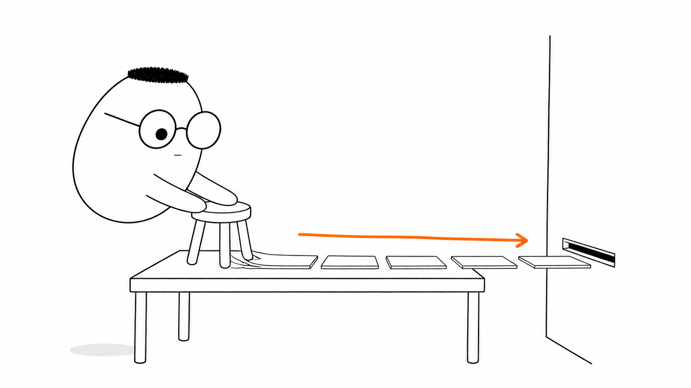
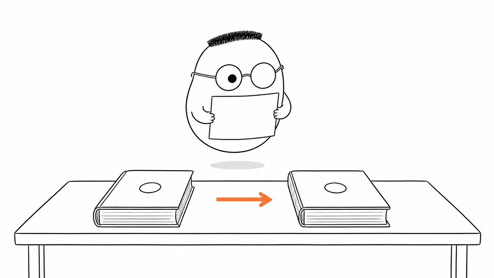
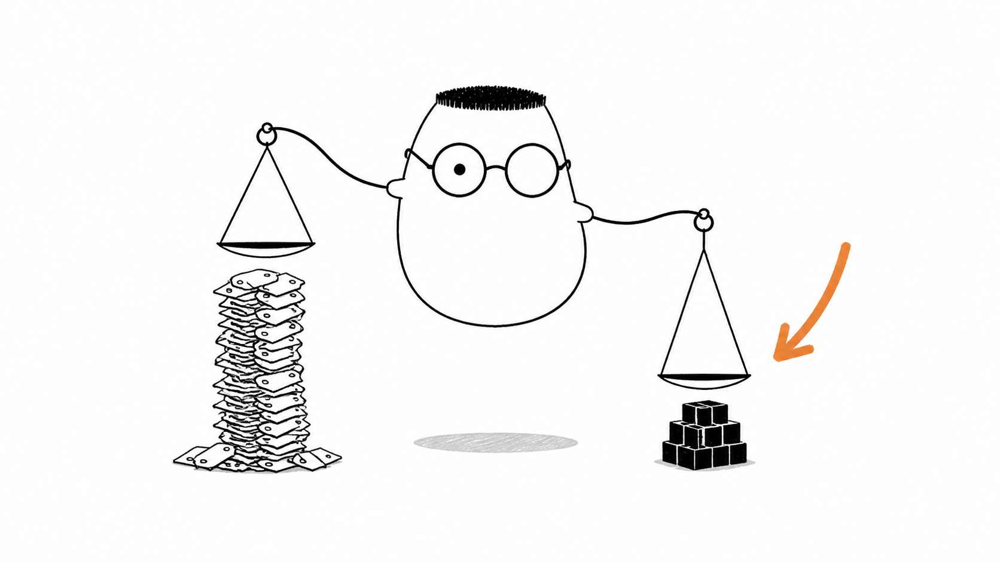

Masalah sehari-hari
Dua program bisa terhubung lewat satu kabel, tetapi isi kepalanya berbeda. Program pertama menyimpan data sebagai objek. Program kedua mungkin memakai bentuk data lain.
Analogi Kuka
Kuka membongkar mainan kursi menjadi potongan datar. Ia menata potongan itu berjajar, lalu memasukkannya lewat celah surat yang sempit.
Di seberang, penerima melihat urutan potongan yang sama. Ia memasang kembali setiap potongan sampai mainan itu kembali utuh.
Peta sederhananya
Mainan utuh adalah objek di memory. Membongkar dan menatanya menjadi bentuk kirim adalah serialize. Memasang kembali potongan itu adalah deserialize. Celah surat adalah kabel yang membawa pesan.
Ilustrasi

Perhatikan urutannya. Kuka tidak mengirim mainan utuh. Ia mengirim bentuk datar yang bisa melewati celah, lalu penerima menyusunnya kembali.
Penjelasan konsep
Program menyimpan nilai dalam memory dengan bentuk yang cocok untuk bahasanya. Bentuk itu belum tentu bisa dikirim melalui jaringan. Program perlu mengubahnya menjadi format yang disepakati bersama.
Serialize berarti mengubah objek di memory menjadi teks atau byte yang siap dikirim. Deserialize melakukan kebalikannya. Ia membaca bentuk kirim, lalu membuat objek yang bisa dipakai program penerima.
Kedua pihak perlu memegang standar bersama. Standar menentukan nama field, jenis nilai, dan cara menulisnya. Tanpa kesepakatan itu, potongan yang datang bisa disusun dengan cara yang berbeda.

Standar bersama membuat dua program yang berbeda membaca pesan dengan aturan yang sama. Keduanya tidak perlu memakai bahasa pemrograman yang sama.
Format kirim biasanya masuk ke dua kelompok. Format teks mudah dilihat manusia. Format biner menyimpan potongan dalam bentuk yang lebih padat.

JSON adalah format teks yang sering dipakai untuk bertukar data lewat HTTP. Teksnya mudah dibaca, sehingga orang bisa memeriksa isi pesan saat debugging.
Format teks vs biner
Format teks seperti JSON memakai karakter yang dapat dibaca. Format biner memakai susunan byte yang lebih ringkas. Teks membantu pemeriksaan. Biner dapat menghemat ruang dan waktu kirim.
JSON
JSON adalah format teks dengan aturan sederhana untuk objek, string, angka, boolean, larik, dan nilai kosong. Banyak client dan server dapat membaca JSON.
Alur kerja end-to-end
Program membuat objek, melakukan serialize menjadi JSON, mengirimnya lewat kabel, lalu program tujuan melakukan deserialize menjadi objek lagi. Respons berjalan dengan urutan kebalikan.
Diagram alur
Objek di memory berubah menjadi teks JSON. Kabel membawa teks itu. Program di seberang melakukan deserialize dan mendapatkan objek lagi.
Contoh mini
Objek di memory
{ nama: "Kuka", jumlah: 1 }
serialize
{"nama":"Kuka","jumlah":1}
deserialize
Objek lagi: nama Kuka, jumlah 1
Seperti kartu pos, objek mendapat bentuk datar untuk perjalanan. Penerima membaca satu baris JSON itu, lalu memakai datanya sebagai objek lagi.
Ringkasan
- Dua program perlu bentuk pesan yang bisa dipahami bersama.
- Serialize mengubah objek di memory menjadi format kirim.
- Deserialize mengubah format kirim kembali menjadi objek.
- Standar bersama menyamakan aturan penulisan dan pembacaan data.
- JSON mudah dibaca. Format biner lebih padat dan hemat tempat.
Pertanyaan pemahaman
- Kenapa dua program tidak bisa saling berkirim objek langsung?
- Apa yang terjadi saat serialize, dan apa kebalikannya?
- Kenapa dua pihak harus memegang standar yang sama?
Mau lebih dalam
Versi teknis membongkar aturan serialize dan deserialize lebih jauh, termasuk sintaks JSON dan cara kerja di beberapa bahasa pemrograman.